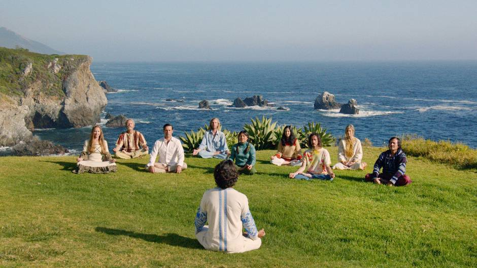
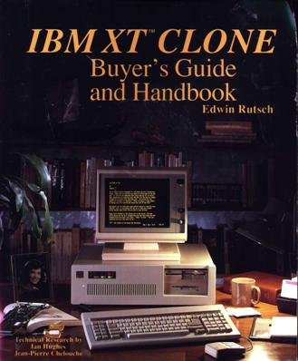
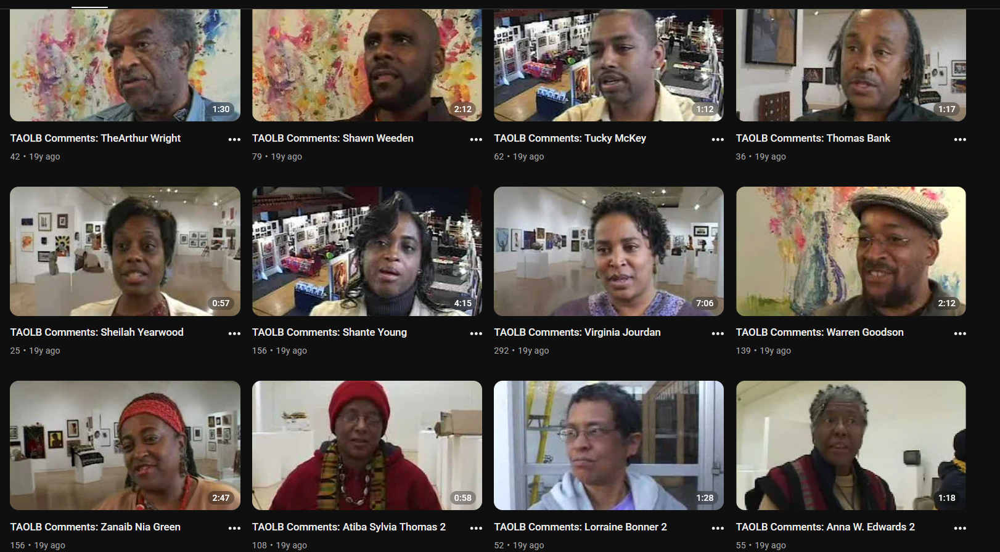
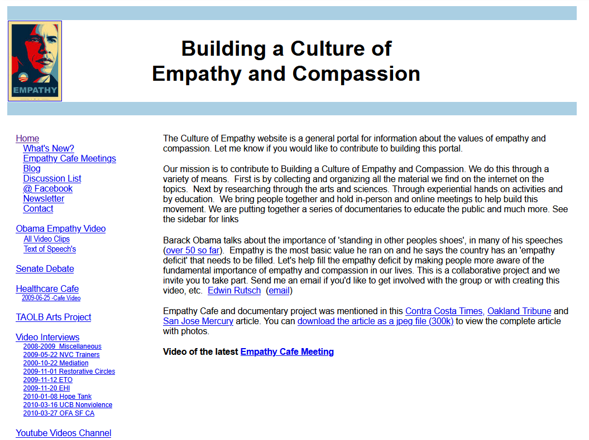
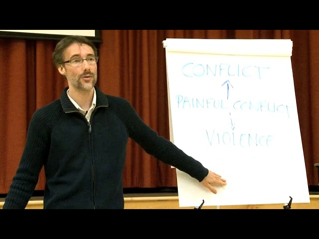
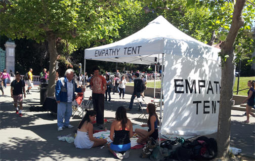
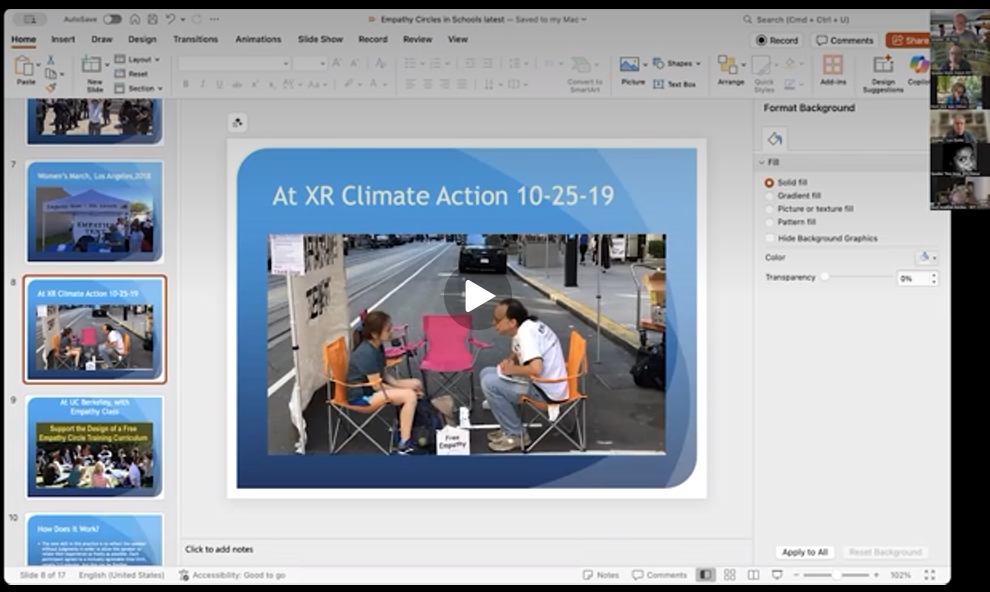
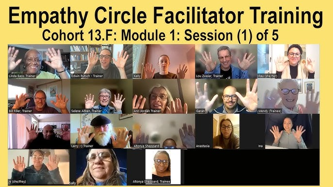
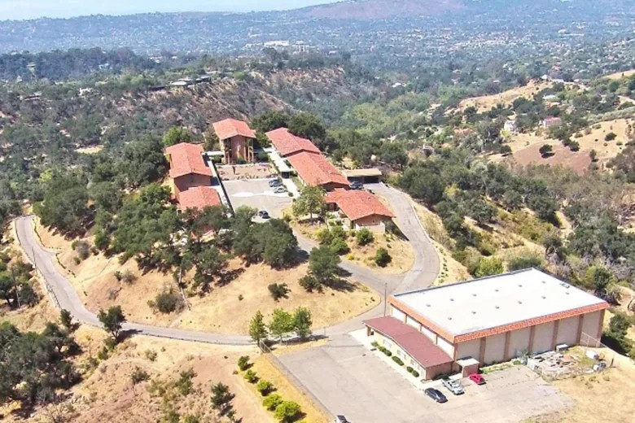
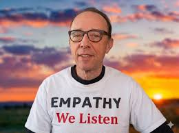

Едвін Ратш (Edwin Rutsch) — не академічний психотерапевт у строгому костюмі. Він — каліфорнійський хіппі з мізками IT-інженера та безстрашністю військового кореспондента. Його життя — це історія про те, як людина шукала одну-єдину деталь, якої бракує людству, і, знайшовши її, вирішила безкоштовно роздати всьому світу.
Він винайшов майже математичний формат Емпатійні кола (Empathy Circle). І щоб зрозуміти, як емпатія перетворилася з абстрактного психологічного терміна на прикладну технологію, здатну зупиняти вуличні бої та зцілювати нації, нам потрібно подивитися на життя людини, яка все це сконструювала.
Едвін народився у 1962 році в Клівленді (штат Огайо), але виріс у Каліфорнії. У дитинстві він зачитувався Джеком Лондоном і на повному серйозі заявляв батькам, що коли виросте, поїде на Аляску ставити капкани на хутрового звіра. Едвін з дитинства страждав на тяжку дислексію. Школа була для нього пеклом. Саме тому він покинув класичне навчання й обрав «навчання через життя».
Його молодість читається як пригодницький роман. Це були 10 років безперервних мандрів. Він працював на золотих копальнях у горах Сьєрра-Невади, збирав фрукти під палючим сонцем Австралії, був портовим вантажником у Гамбурзі, санітаром у лікарні Нової Зеландії. На Філіппінах він навіть випадково знявся в масовці культового фільму Френсіса Форда Копполи «Апокаліпсис сьогодні» (грав американського солдата).
Але найважливіший духовний досвід він отримав, коли цілий рік пропрацював у легендарному Інституті Есален (Esalen Institute) у Біг-Сурі — Мекці американських хіппі та центрі розвитку людського потенціалу. Там він практикував медитації, екстатичні танці та спостерігав за тим, як люди намагаються знайти внутрішній спокій.

Проте в 1990-х роках цей вільний мандрівник робить різкий поворот. Він повертається до США, осідає в Кремнієвій долині і несподівано стає... успішним IT-фахівцем. І це був не просто випадковий заробіток у новій модній сфері. Едвін влучив у дуже конкретний момент комп’ютерної революції: персональні комп’ютери вже масово входили в офіси й домівки, але для звичайної людини ринок IBM-сумісних “клонів” залишався хаотичним і непрозорим.

Він засновує видавництво, пише три популярні книги про те, як збирати ПК, і два роки поспіль входить у топ-100 найвпливовіших людей комп'ютерної індустрії за версією журналу MicroTimes.
Яку материнську плату обрати? Чим один XT-клон кращий за інший? Як не купити дорогу залізяку, яка завтра виявиться несумісною? Ратш перетворив цей хаос на зрозумілу карту. Він самостійно розібрався в новій техніці, почав писати практичні посібники для покупців і користувачів, вів локальну спільноту користувачів.
«Я був президентом групи користувачів Windows NT. На роботі я постійно вступав у люті, до хрипоти, суперечки із системними адміністраторами на тему „Windows NT проти Unix". Це були справжні релігійні війни. Ніхто нікого не чув, кожен просто чекав своєї черги, щоб вдарити аргументом».
Саме цей досвід участі в токсичних гіківських «холіварах» посіяв у ньому зерно сумніву. Він бачив, як комп'ютери ідеально з'єднують машини в мережі, але люди за цими машинами залишаються абсолютно роз'єднаними. Технології не давали відповідей на питання про людський біль.
Важлива деталь: бізнес, а згодом і успішні інвестиції в нерухомість в районі затоки Сан-Франциско, дали Едвіну найголовніше — фінансову незалежність. Він заробив достатньо, щоб більше не думати про виживання. Тому надалі вирішив витратити свій час і гроші на соціальний активізм та пошук відповідей на важливі питання.
Наприкінці 1990-х інтереси Едвіна поступово зміщуються до мистецтва й дослідження людських цінностей. Він запускає серію документально-інтерв’ювальних проєктів, у яких відеокамера стає для нього способом знайомитися з незнайомими людьми та розмовляти з ними про натхнення, співпереживання, свободу, справедливість і сенс життя.
Разом із колегою Джоан Куенц він створює проєкт «Натхнення/мистецтво жити чорним | TAOLB — The Art of Living Black». Вони беруть інтерв'ю у 45 афроамериканських художників. Едвін не питав їх про техніку малювання, він питав: «У чому джерело вашого натхнення?». Він просто мовчав і давав їм безпечний простір для розповідей про расові перепони, вигорання та творчість. Він вперше відчув магію простого слухання. Більшість відео досі є у нього на youtube-каналі.

У 2006 році він запускає новий проєкт-виклик, інтернет-соціальний рух progressivespirit.com. «Що таке progressive цінності?». Едвін ходить вулицями, мітингами та конференціями, запитуючи понад 250 людей: «Яка цінність є найголовнішою для людства? Що може вирішити наші конфлікти?»
В американському контексті тих років «progressive» — це не стільки «сучасний/передовий», скільки: гуманістично-ліво-ліберальний, соціально справедливий, антивоєнний, про-екологічний, про-емпатичний, анти-корпоративний погляд на суспільство. Тобто це цілий ідеологічний кластер. У 2000-х після Буша це був дуже активний термін всередині американських рухів, це стійке словосполучення, впізнаване для своєї аудиторії.
Люди називали сотні різних слів: любов, свобода, справедливість, рівність. Едвін монтував ці відео, переглядав їх ночами. Він не міг знайти єдиний корінь. Все здавалося важливим, але жодне слово не було універсальним ключем.
Едвін приніс 15-хвилинну нарізку зі свого фільму на зустріч політичної групи в Окленді. Після показу його фільму виступав запрошений спікер — відомий професор когнітивної лінгвістики Джордж Лакофф. Лакофф говорить про мораль як емпатію, про те, що в центрі демократії саме емпатія, «Основою всіх творчих і progressive цінностей є емпатія». Для Едвіна це було те, що він шукав. Він зрозумів, що всі у його фільмі, говорячи про турботу чи справедливість, насправді говорили про емпатію.
Того ж року Барак Обама виголошує свою передвиборчу промову, заявляючи, що проблема Америки — це «дефіцит емпатії».
Едвін реєструє домен CultureOfEmpathy.com і перетворює його на найбільшу у світі «Вікіпедію емпатії» та соціальний рух. Він масово бере інтерв'ю в експертів — записує понад 300 розмов із нейробіологами, психологами та миротворцями.

У 2009 році він вивчає спадщину Карла Роджерса (творця клієнт-центрованої терапії) та Ненасильницьке спілкування (ННС) Маршалла Розенберга. Едвін ніколи не зустрічався з Розенбергом особисто, бо той уже хворів і відходив від публічної діяльності, але запускає серію відеоінтерв’ю Interviews About Empathy, де годинами розмовляє з провідними викладачами Ненасильницького спілкування з BayNVC — Мікі Каштан, Інбал Каштан, Джоном Кінйоном, Кіт Міллер, Ореном Софером та іншими (й все викладає публічно в інтернеті).
Його цікавить уже не стільки сама техніка ННС, скільки глибше питання про те, що насправді відбувається між людьми в момент справжнього емпатичного контакту. Едвін швидко помічає головну проблему ННС: проста в теорії, вона виявляється не такою простою для людини, яка зараз опинилася в конфлікті. Щоб користуватися ННС, треба вміти розрізняти свої почуття, бачити за ними потреби й не скочуватися в звичні звинувачення прямо посеред напруги.

Далі записує окремий цикл розмов із Домініком Бартером — творцем практики Відновних кіл (Restorative circles) у бразильських фавелах. У 2010 році Бартер розробив та координував проєкт «Відновлення діалогу» для Міністерства освіти штату Ріо з подальшою адаптацією системи відновного правосуддя у виправних закладах для неповнолітніх громадян. Він впровадив програму медіації для превентивних підрозділів поліції, після чого був запрошений до Постійної групи з примирення та вирішення конфліктів у Верховному суді Ріо у ролі експерта і радника.
Маршалл Розенберг створив сам принцип. А Едвін Ратш почав думати, як зробити його простішим і доступнішим для звичайних людей.
З кожним новим інтерв’ю для «Culture Of Empathy» Едвін помічає дивну річ: усі його співрозмовники говорять про емпатію як про щось життєво необхідне, але пояснюють її зовсім по-різному. У психологів — одна мова, у тренерів ННС — інша, у медіаторів — третя. За одним і тим самим словом ховається десяток несхожих практик, і для звичайної людини це знову перетворюється на туманну теорію. Слово одне — empathy, а практичного єдиного алгоритму немає.
Едвін починає конструювати свій власний формат, мінімальну соціальну технологію емпатичного слухання, збираючи його по шматочках:
Так народжується Емпатійне коло (Empathy Circle). Правила чіткі: ти говориш 3 хвилини → слухач дослівно повертає твої слова без оцінок і порад → ти підтверджуєш («Так, ти почув мене») → ви міняєтеся ролями. Едвін називає це «Gateway Practice» (стартова практика). Вона настільки проста, що їй можна навчити дитину, політика чи розлюченого протестувальника рівно за 5 хвилин.
Восени 2011 року в США спалахує масштабний протестний рух Occupy Wall Street. Едвіну 49 років. Він розуміє, що лабораторні умови закінчилися — час тестувати алгоритм у полі.
Він купує намет/тент, пише на ньому «Empathy Tent» (Намет емпатії) та «100% емпатія» (бо не ділимо людей на 1% та 99%) і несе прямо в епіцентр протестів у Берклі та Окленді. Навколо вирує хаос: люди збираються у натовпи і просто кричать одне на одного в мегафони, це назвали Генеральні асамблеї. Рівень агресії зашкалює.
Що робить Едвін? Він починає буквально затягувати розлючених людей з вулиці у свій намет. Він саджає їх у коло, дає «паличку мовця»: хтось говорить, всі інші слухать. Але деякі люди захоплювали слово й довго виступали — увага губилася, це була проблема. Вирішенням стало обмеження розміру кіл до 3-4 осіб, де всі легко можуть взаємодіяти. Ефект був приголомшливим: люди заходили в намет у люті, готові битися з поліцією, а виходили в сльозах полегшення, бо їх вперше в житті по-справжньому вислухали.
У 2017 році, коли на вулицях Берклі відбувалися одні з найжорстокіших політичних зіткнень, де на кийках билися ультраправі фанати Трампа та радикали з «Антифа», Едвін притягнув свій намет прямо в епіцентр побоїща.

Він і його волонтери одягли прості футболки з написом «Емпатія» і пішли в розлючений натовп. Едвін підходив до людей з бейсбольними бітами, тиснув їм руки, пропонував обійнятися і зазивав у намет на «10 хвилин глибокого слухання».
Як наступний еволюційний крок намету запускає серію зустрічей «Empathy Teams». У світі фасилітації того часу був популярним формат World Cafe (Світове кафе), де люди збиралися за невеликими столиками 4-5 осіб для мозкових штурмів і вільного обміну ідеями. Едвін узяв цю атмосферу неформального, безпечного простору (кафе), але повністю змінив «начинку». Замість дебатів він впровадив туди алгоритм Empathy Circle. Так з’явилися перші «Емпатійні кафе (Empathy Cafe)» — спершу локальні офлайн-зустрічі, а надалі і регулярні онлайн-сесії.
Empathy Cafe = публічна подія, всередині якої проводиться один або кілька Empathy Circles. Empathy Cafe — це публічний емпатичний салон: всі запрошені, може прийти 10–30 людей, може бути загальна тема, вводне слово, потім усіх ділять на малі групи (як breakout room на конференції). Empathy Circle — це мала структурована вправа: один говорить 3 хвилини, вибирає слухача, слухач відзеркалює, поки говорячий не скаже «так, мене почули», потім хід переходить далі.
Після виснажливого вуличного активізму 50-річний Едвін розуміє: з наметом він фізично не зможе навчити емпатії всіх людей. Задовго до того, як це стало мейнстримом, він бачить нову можливість перенести кола в інтернет у мережу Google+ та Google Hangouts (з 2018 року у Zoom). Починає як експеримент проводити регулярні онлайн-кола, навмисно запрошуючи людей з полярними думками: демократів і республіканців, екоактивістів і скептиків зміни клімату. Перше записане на відео Емпатійне Коло — це 25.08.2012.
Едвін помітив феномен, який став візитною карткою Емпатійних кафе: коли людина чує, як її опонент без критики віддзеркалює її власні, нехай навіть агресивні слова, агресія моментально здувається. На одній із ранніх зустрічей Ратш так описав цей процес: «Трансформація образливого повідомлення у зв'язок — це і є сила емпатії. Коли тебе просто віддзеркалюють, конфлікт починає розплутуватися».
Люди, які заходили в онлайн-кімнату чужими й налаштованими на боротьбу, переживали незвичний досвід. Згідно зі звітами перших років, учасники розповідали, як їхні тіла буквально розслаблялися, зникала напруга, а багато хто плакав просто від факту, що його вислухав і не засудив ідеологічний противник. Вони ділилися з абсолютно незнайомими людьми глибшими переживаннями, ніж із власними родинами.
Але 2010-ті роки були часом мінімальної помітності. Людям здавалося дивним збиратися в інтернеті просто для того, щоб «слухати одне одного». Едвіну доводилося тягнути проєкт на голому ентузіазмі, працюючи зі свого будинку в районі затоки Сан-Франциско. Він писав сотні листів політикам і професорам, отримував відмови.
😷 Несподівано прорив стався у 2020 році. Світ закрився на карантин через COVID-19. Ізоляція, страх, а також жорстокий політичний розкол у США створили ідеальний шторм. Те, що Едвін будував роки у тиші, раптово стало життєво необхідним. Онлайн кола.
Разом із колегами (Лу Свайром, Біллом Філлером) він у 2020 році створює курс ECFT (Empathy Circle Facilitator Training) — онлайн-систему підготовки ведучих. Він почав випускати когорти фасилітаторів, які йшли проводити кола емпатії всюди.


Навчання будують не як лекцію, а як серію живих когорт: учасники самі проходять через кола, тренуються фасилітувати, працюють у парах з «empathy buddy», отримують зворотний зв’язок і щотижневу супервізійну підтримку. Ідея проста: недостатньо зрозуміти та завчити — треба багато разів прожити досвід, коли ти одночасно вчишся слухати інших і втримувати простір без оцінок. На сайті empathycircle.com можна подивитися звіти одних з перших фасилітаторів (весна 2020).
Так у 2021 році Empathy Circle перестає бути авторським експериментом Едвіна і перетворюється на систему, яку передають від людини до людини.
Ратш завжди ретельно документував і записував все, що робив — інтерв'ю, лекції, тренінги, виступи на вулицях. Тому на його YouTube-каналі можна знайти тисячі годин відео: від ранніх інтерв'ю з експертами про емпатію до записів живих Empathy Circle на протестах і в онлайні. Це зроблено свідомо — він хоче, щоб метод був відкритим і відтворюваним.
Едвін — переконаний лівий прогресист (демократ), який живе в ліберальній Каліфорнії. Але його рідний брат, Чарльз Ратш, — консерватор, бізнесмен та інвестор у нерухомість. Їхні батьки — іммігранти, які втекли зі Східної Німеччини (НДР). У звичайних американських сім'ях такі політичні розбіжності часто призводять до розриву стосунків, але брати Ратш зробили свою сім'ю полігоном для практики емпатії.
У віці 60 років Едвін робить радикальний крок — він запускає промо-сайт edwinforcongress.com та балотується до Палати представників США від 8-го округу Каліфорнії (див. Ballotpedia). У нього не було класичної політичної програми (податки, дороги, армія). Він називав себе шукачем (Seeker), а платформа називалася «Empathy First» (Емпатія понад усе), де відверто заявляв виборцям: «Я не обіцяю вирішити всі ваші проблеми з податками чи дорогами. Але я гарантую, що зміню те, ЯК ми їх обговорюємо». Едвін пропонував зобов'язати політиків-демократів і республіканців сідати в Емпатійні кола перед прийняттям будь-якого закону. Програв праймеріз (набравши 3 268 голосів).
Чарльз (компанія Christus Victor LLC) наприкінці 2022 року купив на аукціоні за 7,6 мільйона доларів величезний колишній католицький монастир St. Mary’s Seminary (площею 35 акрів) у Санта-Барбарі. У 2023 році вони разом з Едвіном почали створення The Empathy Center. У 61 рік Едвін отримав постійну фізичну базу для свого руху. Тепер це штаб-квартира, де проходять живі тренінги, медіації та саміти.

Ратш давно говорив, що емпатія погано приживається як разова онлайн-вправа: справжня зміна починається тоді, коли люди не лише слухають одне одного годину в Zoom, а й кілька днів живуть поруч, разом їдять, сперечаються, мовчать, знову повертаються до діалогу. Саме тому The Empathy Center замислювався не як офіс організації, а як лабораторія співжиття — місце, де емпатію можна тренувати не епізодично, а в повсякденній взаємодії.
Уже в перший рік на території центру починають проходити фасилітаційні тренінги, відкриті Empathy Cafes, міжрелігійні зустрічі, творчі майстерні та виїзні ретрити. Едвін намагається зібрати під одним дахом дуже різних людей — психологів, активістів, медіаторів, духовних практиків, митців і просто тих, хто втомився від суспільної ворожнечі. Його ідея проста: якщо конфлікт став нормою, то десь має з’явитися місце, де нормою стане емпатичне слухання.

У 2025–2026 роках фокус Едвіна розширюється на нові технології. Він робить ставку на Штучний інтелект (ШІ) як на інструмент для глобального масштабування. Ратш розпочинає співпрацю з Грегорі Депоу (Gregory Depow) з Лабораторії емпатії та емоцій Каліфорнійського університету в Сан-Дієго (UC San Diego). Вони досліджують концепцію «цілісної емпатії» (Wholistic Empathy) та те, як великі мовні моделі (LLM) можуть симулювати Емпатійні кола. ШІ розглядається як безпечний тренажер: люди можуть вчитися віддзеркалювати емоції у розмові з ботами, перш ніж переходити до болючих суперечок з живими опонентами.
Навесні 2026 року методика вийшла на новий рівень фінансування та впливу. Спільно з Американською гуманістичною асоціацією (AHA) Едвін запустив ініціативу «The American Empathy Project», яка виділила $100,000 у вигляді грантів на локальні проєкти з розбудови культури слухання. Проєкт завершився масовим Національним днем служіння (National Day of Service), який відбувся 2 травня 2026 року. Це довело, що емпатія може бути не лише теорією, а й потужною соціальною дією.
Головна мета Едвіна Ратша звучить як абсолютна утопія: навчити фасилітації Емпатійного кола всі 8 мільярдів людей на планеті.
Едвін Ратш намагається зробити з навички емпатійного слухання те саме, що свого часу зробили з правилами миття рук чи чищенням зубів — перетворити це зі складної медичної процедури на базову, безкоштовну і повсюдну гігієнічну звичку.
Щоб досягти цього, він зробив найважливіший крок — перевів усі свої навчальні матеріали в суспільне надбання (Public Domain). Він відмовився від патентів, авторських прав і роялті. Будь-яка людина, школа чи держава може взяти його метод безкоштовно.
Читати: Empathy Circle Handbook (англ.)
Читати: Empathy Buddy Project (англ.)
І навіть якщо він не встигне особисто навчити всі 8 мільярдів, він точно залишить після себе світ, який отримав інструкцію про те, як слухати одне одного трохи краще.